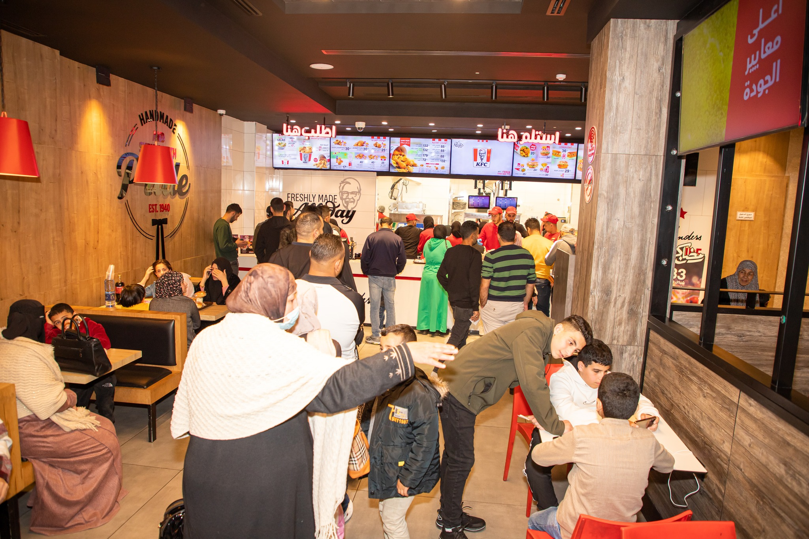
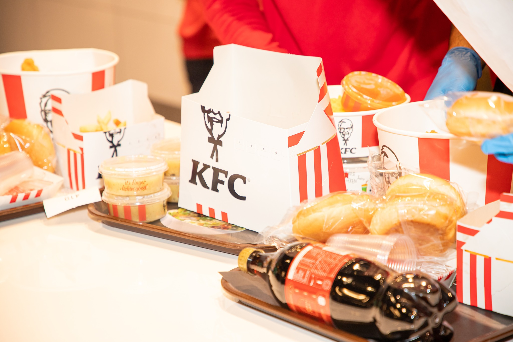
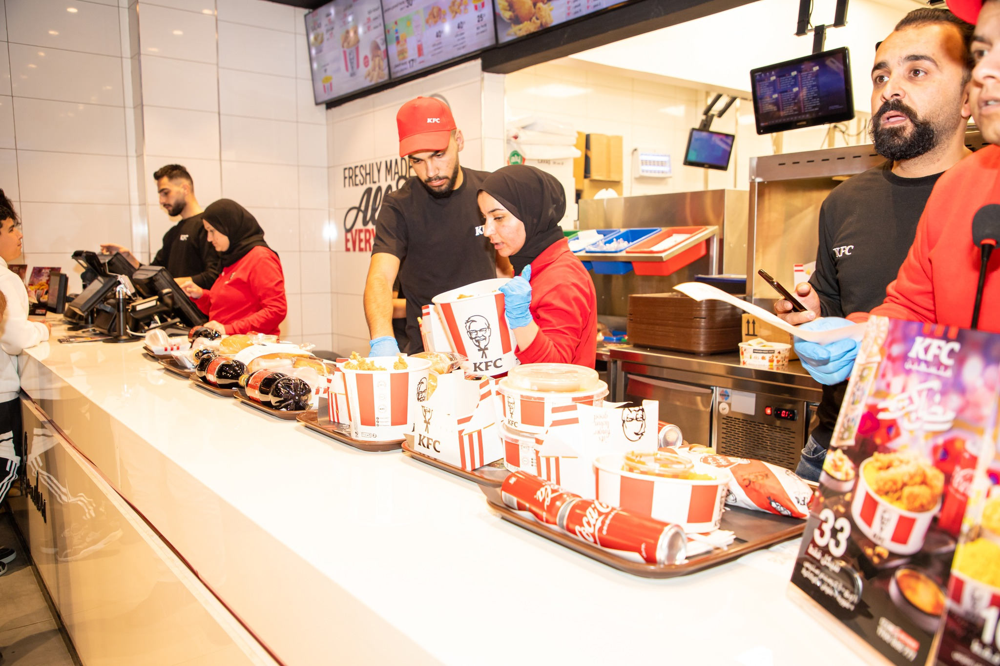
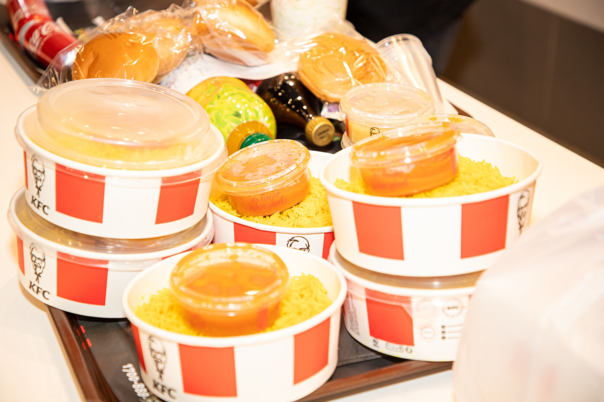
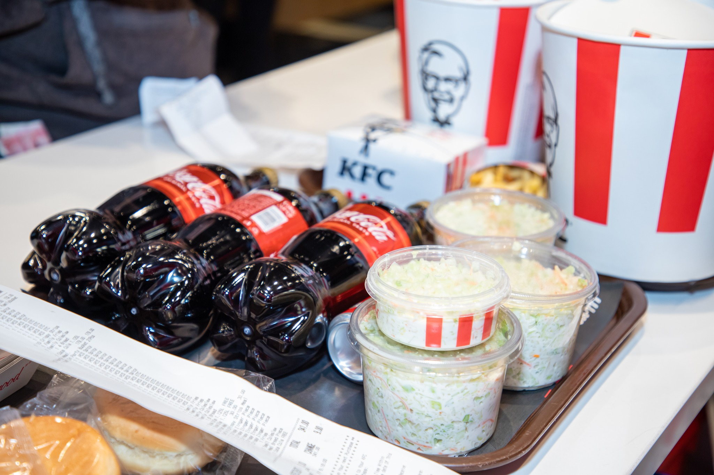

KFC, is a global chicken restaurant brand with a rich, decades-long history of success and innovation. It all started with one cook, Colonel Harland Sanders, who created a finger lickin’ good recipe more than 80 years ago, a list of secret herbs and spices scratched out on the back of the door to his kitchen. Today we still follow his formula for success, with real cooks breading and freshly preparing our delicious chicken by hand in more than 26,000 restaurants in over 150 countries and territories around the world.
    